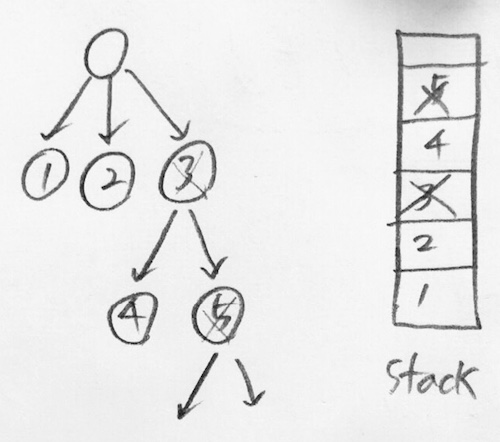
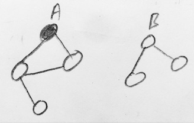
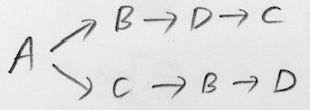

• 먼저 visit 된 애를 나중에 탐색
• DFS 는 그래프 구조 등 다양한 문제를 푸는데 사용
DFS
Visited First, Explored Later
• 돌고도는 graph 인 경우 cycle 안에 갖힐 수 있으므로 visited 를 기록하기도 함

Recursive - traversal
• dfs 만으로는 여러개의 클러스터를 잡아주지 못하기 때문에, solution 을 둔 것
(예: dfs 만으로는 A cluster에서 시작을 했으면, B cluster에는 인접한 노드가 없기 때문에 방문조차 안 됨)
• 밑의 코드는 그냥 한번의 traversal 만 하는 것이지 path를 찾는 코드가 아님

위의 코드를 돌리면 예를들어 다음과 같은 DFS의 여러 경로가 있을 때

이를 다 거쳐주지 않음. 왜냐하면, A→B→D→C 를 돌리고 나면
visited = [ True, True, ・・・, True] 로 바뀌었기 때문에 A→C 를 돌을 이유가 없음.
즉 A의 분기에서의 visited 상태를 포착해두고, A→B→D→C 가 끝났을 때, 그 포착된 곳에서 다시 시작할 어떤 장치가 필요
이를 생각해보면,
① visit 이라는 arg를 항상 deepcopy로 주고받는 방법으로, 분기점에서 visit 상황이 변하지 않고 보존되게 하는 방법
이 있고, 이렇게 되면 fork 된 visited가 모두 True가 되어 저장해야 하는 순간은, leaf node 에서 일어나게 되므로
② 답을 solution 이 아닌 dfs의 leaf에서 저장하는 단계가 들어가게 됨. 또한 path 를 기록하고자 하므로,
③ visit 을 T/F가 아닌 visit order 로 기록함
🚩 tip
visited = [False, False, ・・・ , False] 로 초기화 하면, 몇가지 오해의 소지가 생기는게,
visited = [1, 2, 0, 3] 가 되었을 때, if False in visited: 라고 체크를 하면
0 이 False 이므로 True 로 떠버림… 즉 visited를 작성을 할 때 0부터 들어가니까 생기는 문제.
-1 로 초기화가 가장 확실하고, max(visited) + 1 하면 순서 적을 때도 좋으니 추천함
Recursive - Path (visited = [1, 4, 0, 3, 2] 이런식으로 기록됨)